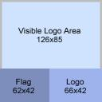

6.2 Creating the Pit LogoAnatomy of the Pit Logo The image on the left shows the anatomy of the pit logo for a resolution of 128x128 pixels. In the following discussion I will put the numbers for a 256x256 logo in braces. Lets start with the grey border. This border defines the colour of the pit wall outside the logo area. Its width has to be one pixel, independent of the logo resolution. The visible logo sits inside this border and has a size of 126x85 (254x171) pixels. In the lower left part of the logo you should put the flag of your country (most often images of the flag are available on your country's homepage), the size is 62x42 (124x84) pixels. On the bottom right is space left for another logo of your team with 66x42 (132x84) pixels. I think the lower logo parts will be used in the future for driver selection and results. |
Create the LogoYou can create your logo with the GIMP. When you finished your pit logo save it in the SGI format with the name "logo.rgb". Put it into the bt source directory if you want that logo for the whole team or into the bt/0 directory if you want it just for the car bt 1. Changing the MakefileHere I assume that we want to deploy one logo for the whole team, so the logo is in the bt directory. Now change in the Makefile in this directory the line SHIP = ${ROBOT}.xml
to SHIP = ${ROBOT}.xml logo.rgb
If you want to put the logo in the car directory you have to put the logo there and to edit the Makefile there. After you have installed the logo with "make install" it should appear in the simulation. |
|
|
Summary
|
|
Back |
Painting the car. |